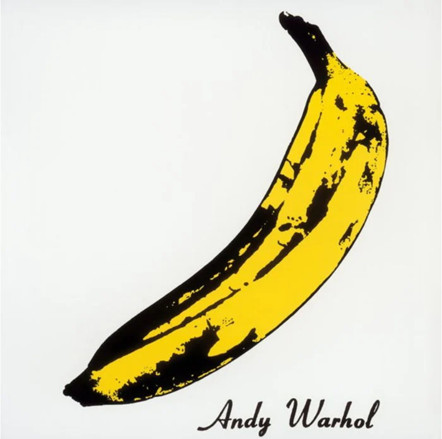
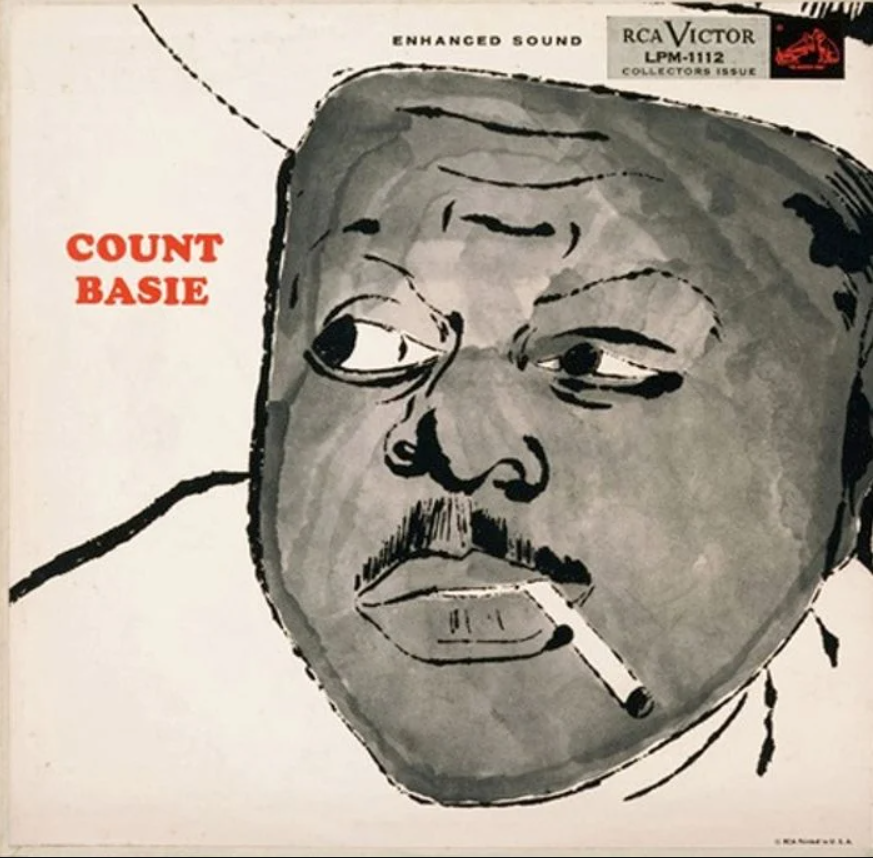
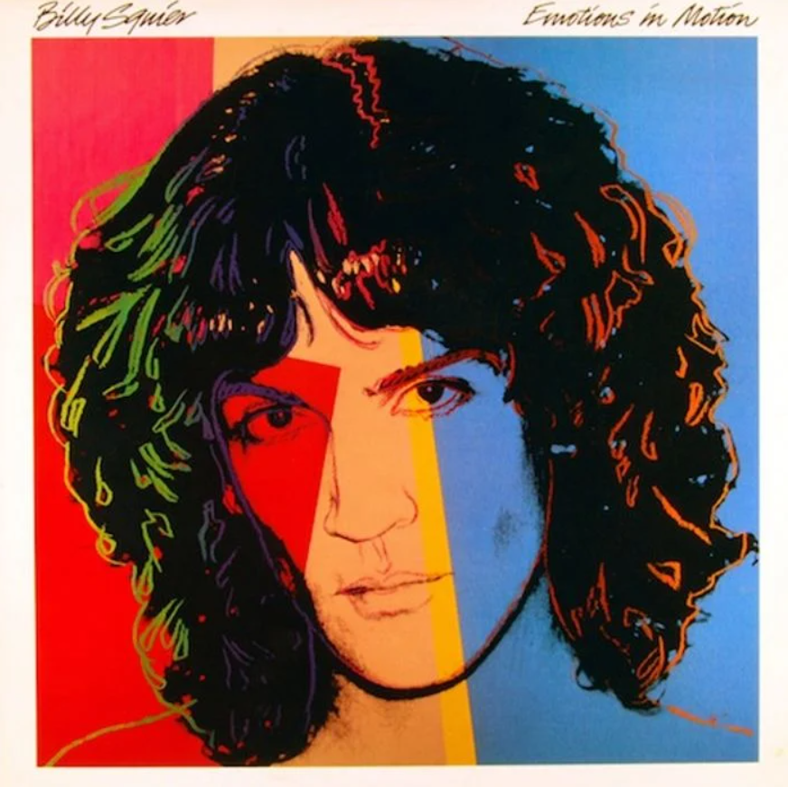
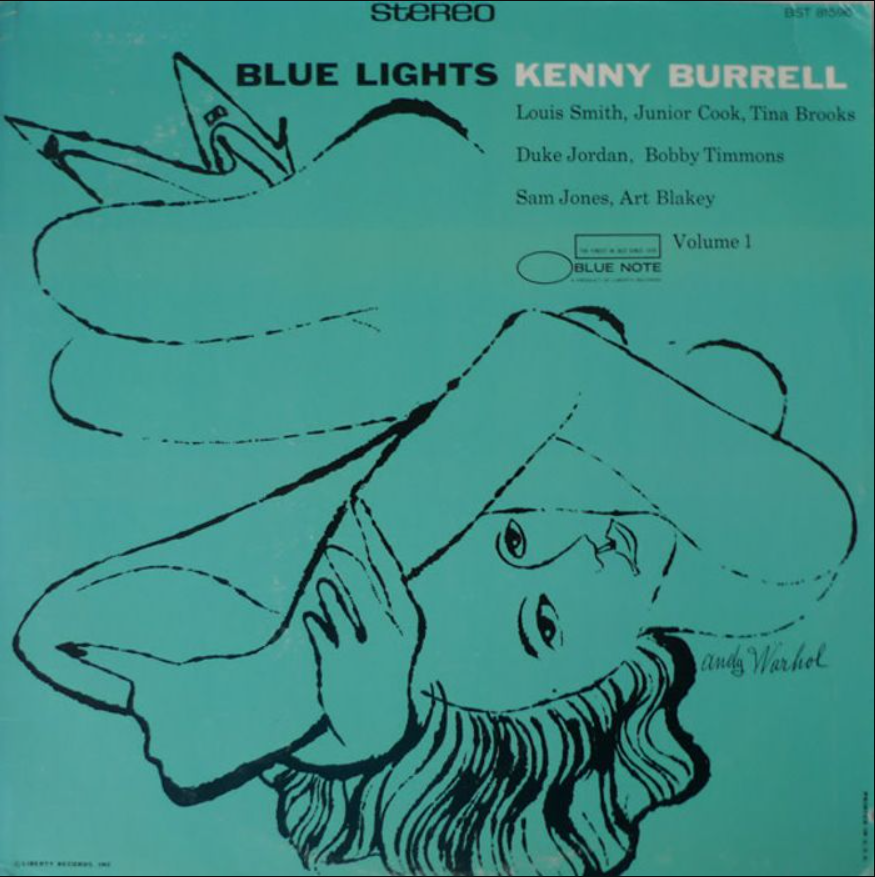
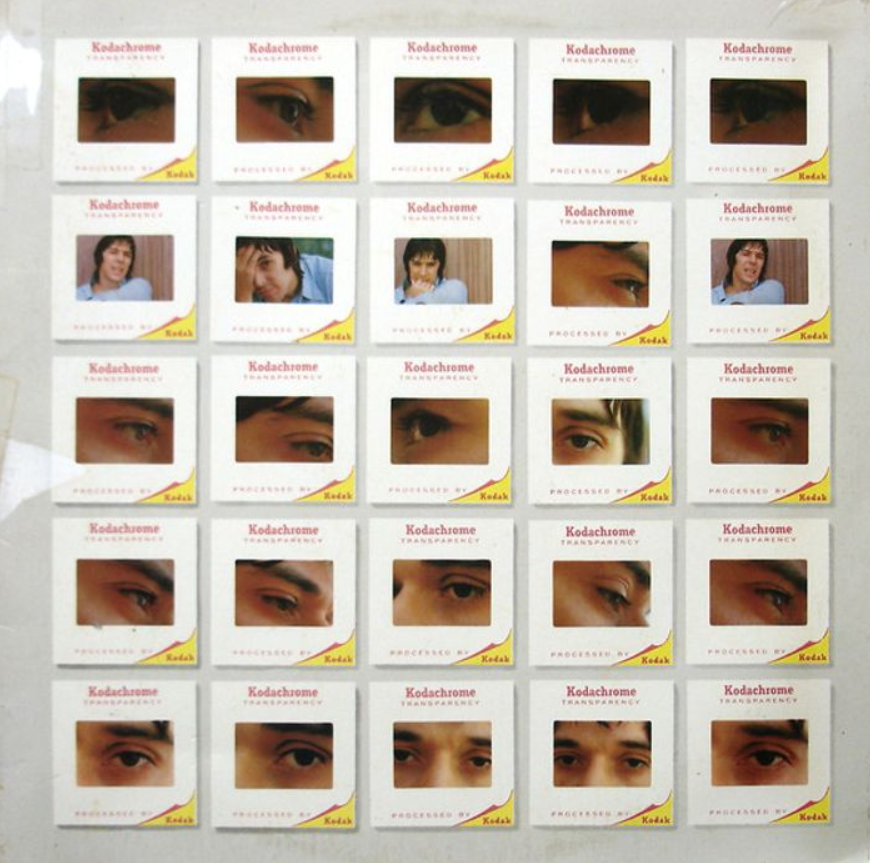
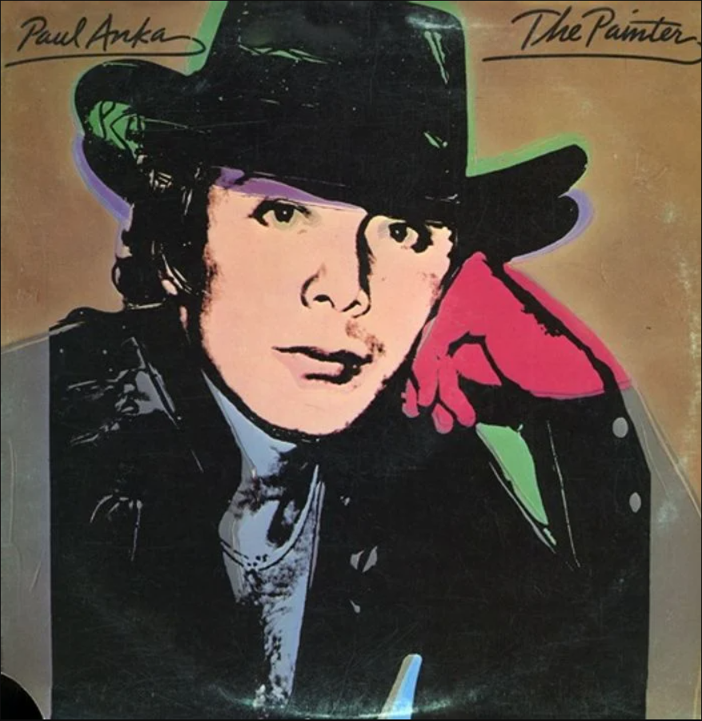

If there’s one iconic album artwork that almost everyone will know is and Andy Warhol piece it’s this one. The 1967 self-titled album from Factory superstars, The Velvet Underground. The band were a plaything of sorts for Warhol who managed the group briefly. With Lou Reed and John Cale at his songwriting disposal, Warhol was entrusted with the album artwork.

Next up was the self-titled record of jazz pianist Count Basie which featured a stunning portrait fo the man himself.The musician’s face only enhanced by the block type, it’s a classic piece of Warhol arrangement that confirmed Basie’s position as a cultural icon — the very kind Warhol would make famous later in his career.

Billy Squier can count himself among the plethora of stars to have been given his very own Warhol portrait. The album was a second consecutive top 5 entry into the charts and featured the hit song ‘Everybody Wants You’.Though not on the same level of fame as the rest of the entries on our list, there’s something about Squier that drew Andy Warhol to him.

Blue Lights is another album to be graced by Warhol’s work as the record from American jazz guitarist Kenny Burrell recorded in 1958 and released on the Blue Note label as two 12 inch LPs entitled Volume 1 and Volume 2.While Warhol wasn’t exactly picking and choosing his projects at this stage in his career, jazz offered the artist a form of expression that he could understand.

Warhol’s next venture would see him reunite with The Velvet Underground’s John Cale on his 1972 masterpiece The Academy in Peril.The record was the second solo album by the Camarthen native with Warhol reverting to a more signature aesthetic than with his work with The Rolling Stones.Warhol is clearly making sure his trademark was left behind.

The New Yorker then took four years off working on record covers before producing this portrait of Paul Anka for the Canadian singer-songwriter’s 1976 effort The Painter. Paul Anka doesn’t quite hit the same levels of rock appreciation as say the Velvet Underground or the Rolling Stones. But he’s an icon nevertheless and the lounge singer gets his reward with this classic Warhol cover.